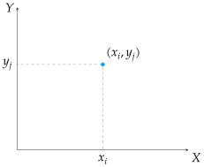
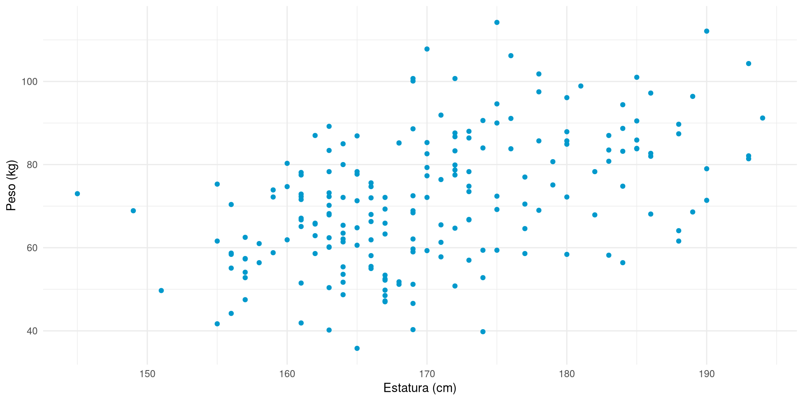
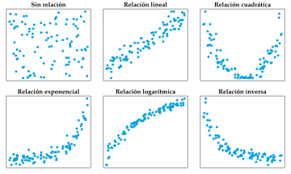
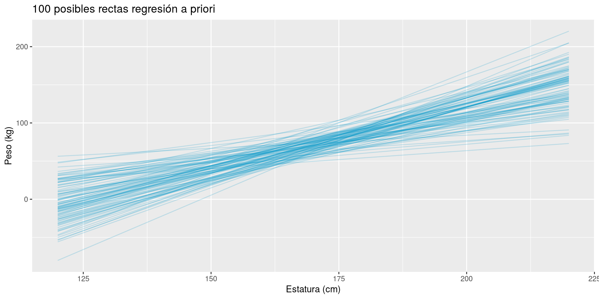
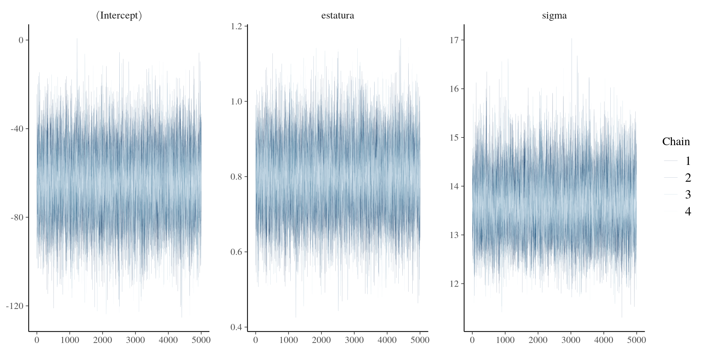
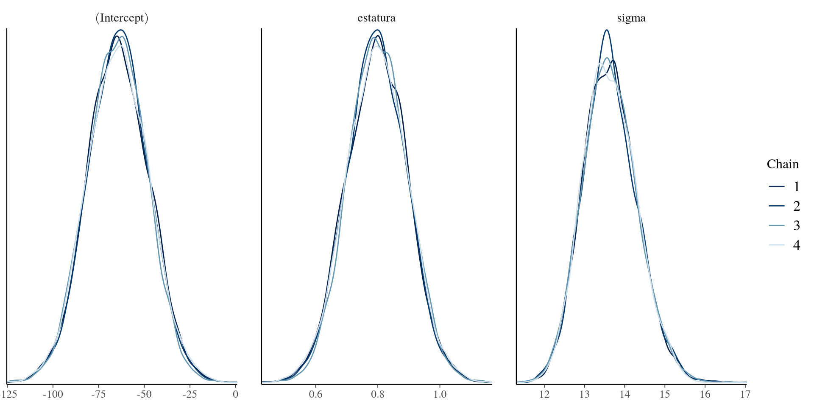
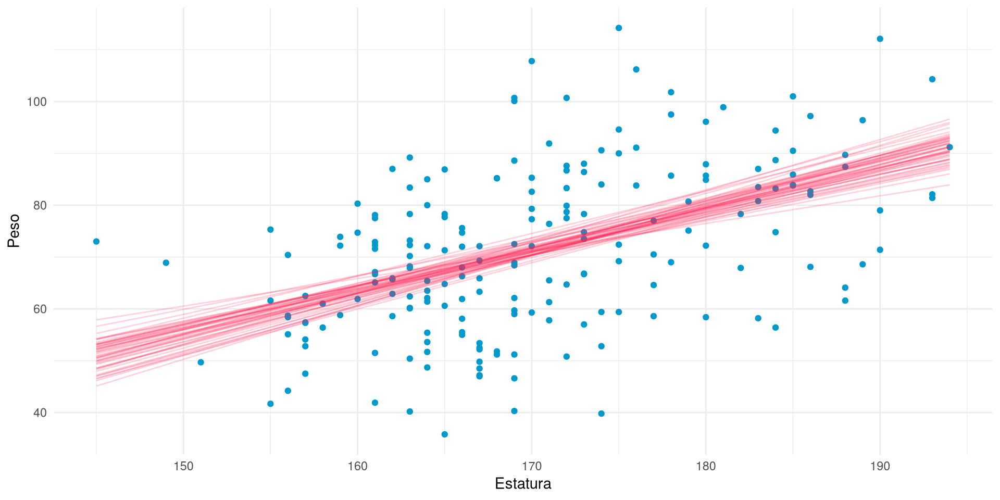

Modelos de regresión lineales y no lineales, evaluación de modelos y predicciones
Regresión Bayesiana
Alfredo Sánchez Alberca
Regresión lineal simple
Modelos de regresión
En Estadística se utilizan modelos de regresión para describir la relación entre una variable dependiente \(Y\) y una o varias variables independientes \(X_1, X_2, \ldots, X_n\).
En el caso de una sola variable independiente, se habla de regresión simple, y el modelo se expresa como
\[
Y = f(X) + \varepsilon,
\]
donde \(f(X)\) es una función de \(X\) que describe la relación entre \(Y\) y \(X\), y \(\varepsilon\) es un término de error que refleja la variabilidad de \(Y\) que no se explica por \(X\), y que se asume que sigue una distribución normal con media cero y varianza \(\sigma^2\),
\[
\varepsilon \sim \mathcal{N}(0, \sigma).
\]
Diagrama de dispersión
Para analizar la relación entre dos variables cuantitativas, debemos estudiar la variabilidad de la distribución conjunta de las dos variables. Esta variabilidad conjunta se suele representar gráficamente mediante un diagrama de dispersión. Un diagrama de dispersión se representa sobre unos ejes cartesianos, donde el eje \(X\) normalmente representa la variable independiente, y el eje \(Y\) representa la variable dependiente, y por cada par de valores \((x_i,y_j)\) en la muestra se dibuja un punto en el plano con esas coordenadas.

Diagrama de dispersión.
Ejemplo 1 El conjunto de datos peso-estatura contiene el peso y la estatura de una muestra de 200 personas mayores de 18 años. El siguiente código muestra el diagrama de dispersión de peso frente a estatura.
library(tidyverse)df <-read_csv("datos/peso-estatura.csv")ggplot(df, aes(x = estatura, y = peso)) +geom_point(color = myblue) +labs(x ="Estatura (cm)", y ="Peso (kg)") +theme_minimal()

Tipos de modelos de regresión simple
La forma de la nube de puntos en el diagrama de dispersión nos da una idea de la forma de la función \(f\) que describe la relación entre \(Y\) y \(X\).

Tipos de regresión simple.
Regresión lineal simple
Cuando \(f\) es una recta, se dice que el modelo es un modelo de regresión lineal simple, y se expresa como \[
Y = \beta_0 + \beta_1 X + \varepsilon,
\]
donde \(f(x) = \beta_0 + \beta_1 x\) es una una recta que expresa la relación lineal entre \(Y\) y \(X\), y \(\varepsilon \sim N(0, \sigma).\)
Para cada valor \(x_i\) de la variable independiente, el modelo de regresión lineal simple asume que la variable dependiente \(Y\) sigue una distribución normal con media \(\mu_i = \beta_0 + \beta_1 x_i\) y varianza \(\sigma\).
La relación lineal queda determinada por dos coeficientes:
Término independiente \(\beta_0\). Es la media de \(Y\) cuando \(X=0\).
Pendiente \(\beta_1\). Es el cambio que experimenta la media de \(Y\) por cada unidad que se incrementa \(X\).
Regresión lineal en Estadística frecuentista
En Estadística frecuentista, el modelo de regresión lineal simple se estima a partir de los datos utilizando el método de los mínimos cuadrados, que consiste en encontrar los valores de \(\beta_0\) y \(\beta_1\) que minimizan la suma de los cuadrados de las diferencias entre los valores observados \(y_i\) y los valores predichos por el modelo \(\hat{y}_i = \beta_0 + \beta_1 x_i\).
Esto da lugar a la famosa fórmula de la recta de regresión lineal simple:
\[
y = \bar{y} + \frac{\sigma_{xy}}{\sigma_x^2}(x-\bar{x}),
\]
donde \(\bar{x}\) y \(\bar{y}\) son las medias de \(X\) e \(Y\), respectivamente, \(\sigma_{xy}\) es la covarianza entre \(X\) e \(Y\), y \(\sigma_x^2\) es la varianza de \(X\), es decir,
En R existen varias funciones para ajustar modelos de regresión lineal. Las más habituales son:
lm(). Se utiliza para variables dependientes continuas con distribución normal. Ajusta un modelo de regresión lineal utilizando el método de los mínimos cuadrados ordinarios.
glm(). Se utiliza para variables dependientes con distribuciones de la familia exponencial: normal, binomial, Poisson, gamma, etc. Ajusta un modelo de regresión generalizada utilizando el método de máxima verosimilitud (minimiza la log-verosimilitud).
Ajuste de un modelo de regresión lineal simple con lm()
lm()
Realiza un ajuste de un modelo de regresión lineal utilizando el método de los mínimos cuadrados ordinarios.
Parámetros:
formula: fórmula que especifica el modelo de regresión lineal a ajustar.
data: conjunto de datos que se utilizará para ajustar el modelo de regresión lineal.
Conviene recordar que la fórmula para especificar un modelo de regresión en R tiene la siguiente sintaxis:
var_dependiente ~ var_independientes
donde las variables independientes en modelos de regresión múltiple se pueden combinar con los operadores
+ para incluir varias variables independientes sin interacción.
* para incluir varias variables independientes con interacción.
: para incluir sólo la interacción entre varias variables independientes.
Ejemplo 2 Recordemos el ajuste de un modelo de regresión lineal simple del peso sobre la estatura utilizando el método de mínimos cuadrados con la función lm().
library(broom)library(knitr)modelo_lineal <-lm(peso ~ estatura, data = df)tidy(modelo_lineal) |>kable()
term
estimate
std.error
statistic
p.value
(Intercept)
-59.675687
17.1130556
-3.487144
0.0006014
estatura
0.770071
0.1003361
7.674912
0.0000000
Ajuste de un modelo de regresión lineal simple con glm()
glm()
Realiza un ajuste de un modelo de regresión generalizada utilizando el método de máxima verosimilitud.
Parámetros:
formula: fórmula que especifica el modelo de regresión generalizada a ajustar.
family: familia de distribuciones del error aleatorio en el modelo y de la función de enlace.
data: conjunto de datos que se utilizará para ajustar el modelo de regresión generalizada.
Donde la familia de distribuciones family puede ser cualquiera de las siguientes:
family
Variable dependiente
Función de enlace
Uso típico
gaussian()
Continua
identidad \(\mu\)
Equivalente a lm
binomial()
0/1 o proporción
logit \(\log\left(\frac{\mu}{1-\mu}\right)\)
Regresión logística
poisson()
Conteos
logaritmo \(\log(\mu)\)
Modelos de conteo
Gamma()
Continua positiva
inversa \(1/\mu\)
Tiempos, costes
inverse.gaussian()
Continua positiva
inversa cuadrada \(1/\mu^2\)
Tiempos de espera
Ejemplo 3 Recordemos el ajuste de un modelo de regresión lineal simple del peso sobre la estatura utilizando el método de máxima verosimilitud con la función glm().
modelo_lineal <-glm(peso ~ estatura, data = df, family =gaussian())tidy(modelo_lineal) |>kable()
term
estimate
std.error
statistic
p.value
(Intercept)
-59.675687
17.1130556
-3.487144
0.0006014
estatura
0.770071
0.1003361
7.674912
0.0000000
Regresión lineal en Estadística bayesiana
En Estadística bayesiana, los dos coeficientes del modelo \(\beta_0\) y \(\beta_1\) son dos parámetros más del modelo, que tienen asociada una distribución que refleja la incertidumbre sobre su valor.
Si asumimos que el término de error \(\varepsilon\) sigue una distribución normal, entonces tenemos el modelo
Al igual que para otros parámetros, asignaremos una distribución a priori a cada uno de los coeficientes, así como a la desviación típica \(\sigma\) del término de error, y actualizaremos estas distribuciones a priori con los datos para obtener las distribuciones a posteriori de cada uno de los parámetros del modelo.
Supuestos del modelo de regresión lineal simple
El modelo de regresión lineal simple se basa en los siguientes supuestos:
Linealidad. La relación entre \(Y\) y \(X\) es lineal, es decir, la función \(f\) que describe la relación entre \(Y\) y \(X\) es una recta.
Independencia. Las observaciones son independientes entre sí.
Normalidad. El término de error \(\varepsilon\) sigue una distribución normal con media cero y desviación típica \(\sigma\).
Homoscedasticidad. La varianza del término de error \(\varepsilon\) es constante para todos los valores de \(X\).
Distribución a priori de los parámetros del modelo
Como vimos, para especificar las distribuciones a priori de los parámetros del modelo podemos utilizar distribuciones no informativas o distribuciones informativas. Si disponemos de información previa sobre los parámetros del modelo, debemos utilizar distribuciones informativas para reflejar esa información previa.
Puesto que \(\beta_0\) y \(\beta_1\) son parámetros de localización, es decir, parámetros que pueden tomar cualquier valor real, una distribución a priori adecuada para estos parámetros es la distribución normal.
Mientras que para la desviación típica \(\sigma\) del término de error, que es un parámetro de escala, es decir, un parámetro que sólo puede tomar valores positivos, una distribución a priori adecuada es la distribución exponencial o la Gamma invertida.
\[
\sigma \sim \text{Exp}(\lambda).
\]
Modelo de regresión lineal simple con distribuciones a priori
Ejemplo 4 Para modelizar la relación entre el peso y la estatura, podemos utilizar un modelo de regresión lineal simple con las siguientes distribuciones a priori para los parámetros del modelo:
En este caso hemos cambiado \(\beta_0\), que sería el peso de una persona de estatura cero, algo que no tiene sentido en nuestro caso, por un término independiente centrado, \(\beta_0'\), que representa el peso de una típico de una persona de estatura media.
\(\beta_0'\), que sería el peso de una persona de estatura media, podemos asumir que está entre 45 y 95 kg (media de 70 kg y desviación típica de 10 kg).
\(\beta_1\), que sería el incremento en peso por unidad de estatura, podemos asumir que no es negativo y podría estar entre 0 y 4 kg/cm (media de 2 kg/cm y desviación típica de 1 kg/cm).
\(\sigma\), que mide la variabilidad de los pesos para personas de la misma estatura, no puede ser negativa y parece razonable también asumir un rango de desviaciones típicas entre 0 y 10 kg.
Validación de las distribuciones a priori
Cuando utilicemos distribuciones a priori informativas, es importante validar que estas distribuciones reflejan realmente la información previa que tenemos sobre los parámetros del modelo. Para ello, podemos simular valores de los parámetros a partir de las distribuciones a priori y comprobar que estos valores son razonables.
Ejemplo 5 Para validar las distribuciones a priori del ejemplo anterior, podemos simular 100 valores de \(\beta_0'\), \(\beta_1\) y \(\sigma^2\) a partir de sus distribuciones a priori.
library(rstan)set.seed(123)modelo <-"data { int<lower=1> n; // número de simulaciones (100)}generated quantities { real beta0 = normal_rng(70, 10); real beta1 = normal_rng(1.5, 0.5); real sigma = exponential_rng(0.5); }"prior <-stan(model_code = modelo, data =list(n =100), iter =200, chains =1, algorithm ="Fixed_param")
A continuación, podemos representar gráficamente los valores simulados de cada uno de los parámetros para comprobar que estos valores son razonables.
library(tidyverse)library(tidybayes)prior |>spread_draws(beta0, beta1, sigma) |>expand_grid(x =seq(120, 220, length.out =2)) |>mutate(y = beta0 + beta1 * (x -170)) |>ggplot(aes(x = x, y = y, group = .draw)) +geom_line(color = myblue, alpha =0.2) +labs(title ="100 posibles rectas regresión a priori", x ="Estatura (cm)", y ="Peso (kg)")

Simulaciones de las distribuciones a posteriori
Una vez validadas las distribuciones a priori, podemos ajustar el modelo de regresión lineal simple a los datos utilizando el método de inferencia bayesiana, que nos permitirá obtener las distribuciones a posteriori de cada uno de los parámetros del modelo.
Ejemplo 6 Veamos cómo ajustar el modelo de regresión lineal simple a los datos de los pesos y las estaturas.
modelo <-" data { int<lower = 0> n; vector[n] Y; vector[n] X; } parameters { real beta0; real beta1; real<lower = 0> sigma; } model { Y ~ normal(beta0 + beta1 * X, sigma); beta0 ~ normal(70, 10); beta1 ~ normal(1.5, 0.5); sigma ~ exponential(0.5); }"post <-stan(model_code = modelo, data =list(n =nrow(df), Y = df$peso, X = df$estatura), chains =4, iter =5000*2, seed =84735)
Simulaciones de las distribuciones a posteriori con el paquete rstamarm
Aunque ya hemos visto como ajustar un modelo de regresión directamente con rstan, la definición del modelo en el lenguaje de programación de Stan puede resultar algo compleja, especialmente para modelos más elaborados. Para facilitar el ajuste de modelos de regresión lineal y generalizada utilizando inferencia bayesiana, podemos utilizar el paquete rstamarm, que proporciona una interfaz más sencilla para ajustar estos modelos. En particular, utilizaremos la función stan_glm() para ajustar el modelo de regresión lineal simple a los datos.
stan_glm()
Realiza un ajuste de un modelo de regresión lineal generalizado mediante inferencia bayesiana.
Parámetros:
formula: fórmula que especifica el modelo de regresión lineal generalizado a ajustar. Permite especificar el modelo de regresión de forma sencilla, utilizando una sintaxis similar a la función glm() del paquete stats.
data: conjunto de datos que se utilizará para ajustar el modelo de regresión lineal generalizado.
family: familia de distribuciones que se utilizará para modelar la variable dependiente. Para un modelo de regresión lineal simple, se utiliza la familia gaussian(), que asume que la variable dependiente sigue una distribución normal.
prior: distribución a priori del coeficiente de regresión (la pendiente).
prior_intercept: distribución a priori del término independiente.
prior_aux: distribución a priori de la desviación típica del término de error.
Ejemplo 7 Veamos cómo ajustar el modelo de regresión lineal simple a los datos de los pesos y las estaturas utilizando la función stan_glm()
library(rstanarm)set.seed(123)post <-stan_glm(peso ~ estatura, data = df, family =gaussian(),prior =normal(1.5, 0.5),prior_intercept =normal(70, 10),prior_aux =exponential(0.5),iter =5000*2, chains =4, seed =123)
A continuación analizamos las cadenas de Markov generadas por el ajuste del modelo.
library(bayesplot)mcmc_trace(post, size =0.1)

mcmc_dens_overlay(post)

Se observa que las cadenas de Markov de los tres parámetros son estables y convergentes.
neff_ratio(post) |>kable(col.names ="Neff Ratio")
Neff Ratio
(Intercept)
0.95725
estatura
0.95830
sigma
0.96935
rhat(post) |>kable(col.names ="Rhat")
Rhat
(Intercept)
1.0002731
estatura
1.0002650
sigma
0.9999572
Se observa que el número efectivo de simulaciones es alto para los tres parámetros, y que el valor de \(\hat{R}\) es casi 1, lo que indica que las cadenas de Markov han convergido correctamente.
Intervalos de credibilidad de los parámetros
Al igual que vimos en el capítulo anterior, podemos describir las distribuciones a posteriori simuladas mediante estadísticos de tendencia central y mediante intervalos de credibilidad.
Ejemplo 8 Veamos cómo obtener la media y los intervalos de credibilidad del 90% de las distribuciones a posteriori de los parámetros ajustados en el modelo de regresión del peso sobre la estatura.
Según esto, por cada centímetro más de estatura se espera un incremento en el peso de entre 0.64 y 0.95 kg.
Dibujo de las rectas de regresión a posteriori
Recordemos que lo que obtenemos es una muestra aleatoria de la distribución a posteriori de los parámetros, obtenida mediante cadenas de Markov. Cada caso de la muestra definie una recta de regresión distinta, y todas ellas reflejan la incertidumbre sobre el modelo de regresión lineal
Podemos dibujar algunas de estas rectas para darnos una idea visual de cómo es el ajuste.
Ejemplo 9 Veamos cómo dibujar 50 de las rectas de regresión obtenidas a partir de la simulación de las distribuciones a posteriori de los parámetros.
df |>add_fitted_draws(post, n =50) |>ggplot(aes(x = estatura, y = peso)) +geom_point(data = df, color = myblue) +geom_line(aes(y = .value, group = .draw), color = myred, alpha =0.2) +labs(x ="Estatura", y ="Peso") +theme_minimal()

Contraste de hipótesis sobre los coeficientes de regresión
En Estadística frecuentista, después de ajustar un modelo de regresión lineal, es habitual realizar el contraste de hipótesis sobre los coeficientes de regresión
Estos contrastes se realizan con el test t de Student, que se basa en la distribución t de Student, y que nos permite obtener un \(p\)-valor para cada uno de los coeficientes de regresión, que nos indica la probabilidad de obtener un valor tan extremo como el observado si la hipótesis nula fuera cierta.
En cambio, en Estadística bayesiana, el contraste de hipótesis sobre los coeficientes de regresión se realiza mediante la comparación de las distribuciones a posteriori de los parámetros con un valor nulo o con un valor específico.
Ejemplo 10 Veamos cómo realizar el contraste de hipótesis bayesiano para ver si la pendiente del modelo de regresión lineal del peso sobre la estatura es positiva.
Es decir, podemos afirmar casi con total certeza que la pendiente del modelo de regresión lineal del peso sobre la estatura es positiva, lo que indica que a mayor estatura, mayor peso.
Predicciones con modelos de regresión
Una de las principales utilidades de los modelos de regresión es la posibilidad de realizar predicciones sobre nuevos casos a partir de los valores de las variables independientes.
Para realizar predicciones con un modelo de regresión bayesiano, es necesario obtener la distribución a posteriori de la variable dependiente \(Y\) para cada nuevo caso, a partir de las distribuciones a posteriori de los parámetros del modelo y de los valores de las variables independientes para ese caso. En la generación de la distribución a posteriori de la predicción hay que tener en cuenta la incertidumbre tanto de los parámetros del modelo como del término de error \(\varepsilon\). De nuevo tenemos dos fuentes de variabilidad:
Variabilidad de los parámetros del modelo. Esta variabilidad se refleja en las distribuciones a posteriori de los parámetros del modelo, que se han obtenido a partir de la simulación mediante cadenas de Markov.
Variabilidad en el muestreo. Es la variabilidad asociada al término de error que viene dada por el parámetro \(\sigma\) del modelo, que también tiene una distribución a posteriori obtenida a partir de la simulación mediante cadenas de Markov.
Generación de predicciones
Teniendo en cuenta estas dos fuentes de variabilidad, podemos obtener la distribución a posteriori de la predicción mediante el muestreo simulado de la distribución
donde \(\hat{X}\) es el valor de la variable independiente para el nuevo caso, y \(\beta_0^i\), \(\beta_1^i\) y \(\sigma^i\) son los valores simulados de los parámetros del modelo en la iteración \(i\) de las cadenas de Markov.
Para ello podemos usar la funcción add_fitted_draws() del paquete tidybayes.
add_fitted_draws()
Realiza una predicción para un nuevo caso a partir de las distribuciones a priori de los parámetros del modelo.
Parámetros:
newdata: conjunto de datos con los valores de las variables independientes para el nuevo caso.
model: modelo de regresión ajustado mediante inferencia bayesiana, que contiene las distribuciones a posteriori de los parámetros del modelo.
Ejemplo 11 Veamos cómo obtener la distribución a posteriori de la predicción del peso para una persona de estatura 180 cm, utilizando el modelo de regresión lineal simple ajustado anteriormente.
# A tibble: 20,000 × 6
# Groups: estatura, .row [1]
estatura .row .chain .iteration .draw .value
<dbl> <int> <int> <int> <int> <dbl>
1 180 1 NA NA 1 79.5
2 180 1 NA NA 2 78.9
3 180 1 NA NA 3 78.9
4 180 1 NA NA 4 81.0
5 180 1 NA NA 5 81.9
6 180 1 NA NA 6 77.2
7 180 1 NA NA 7 81.3
8 180 1 NA NA 8 79.8
9 180 1 NA NA 9 79.3
10 180 1 NA NA 10 79.8
# ℹ 19,990 more rows
Y una vez que tenemos la distribución a posteriori de la predicción, podemos describirla mediante su media y su intervalo de credibilidad como es habitual.
Es decir, para una persona de estatura 180 cm, el peso esperado es de entre 70 y 81.5 kg, con una probabilidad del 90%.
Evaluación de modelos de regresión
Todos los modelos de regresión son aproximaciones de la realidad, y por tanto, es importante evaluar la calidad del ajuste de un modelo a los datos, sobre todo si queremos hacer predicciones con ese modelo.
Para ello, existen diferentes métricas de evaluación de modelos de regresión, como el error cuadrático medio (MSE), el coeficiente de determinación (\(R^2\)), el criterio de información de Akaike (AIC), el criterio de información bayesiano (BIC), etc.
Regresión lineal múltiple
Regresión lineal múltiple
Cuando la variable dependiente \(Y\) depende de varias variables independientes \(X_1, X_2, \ldots, X_p\), se habla de regresión lineal múltiple: